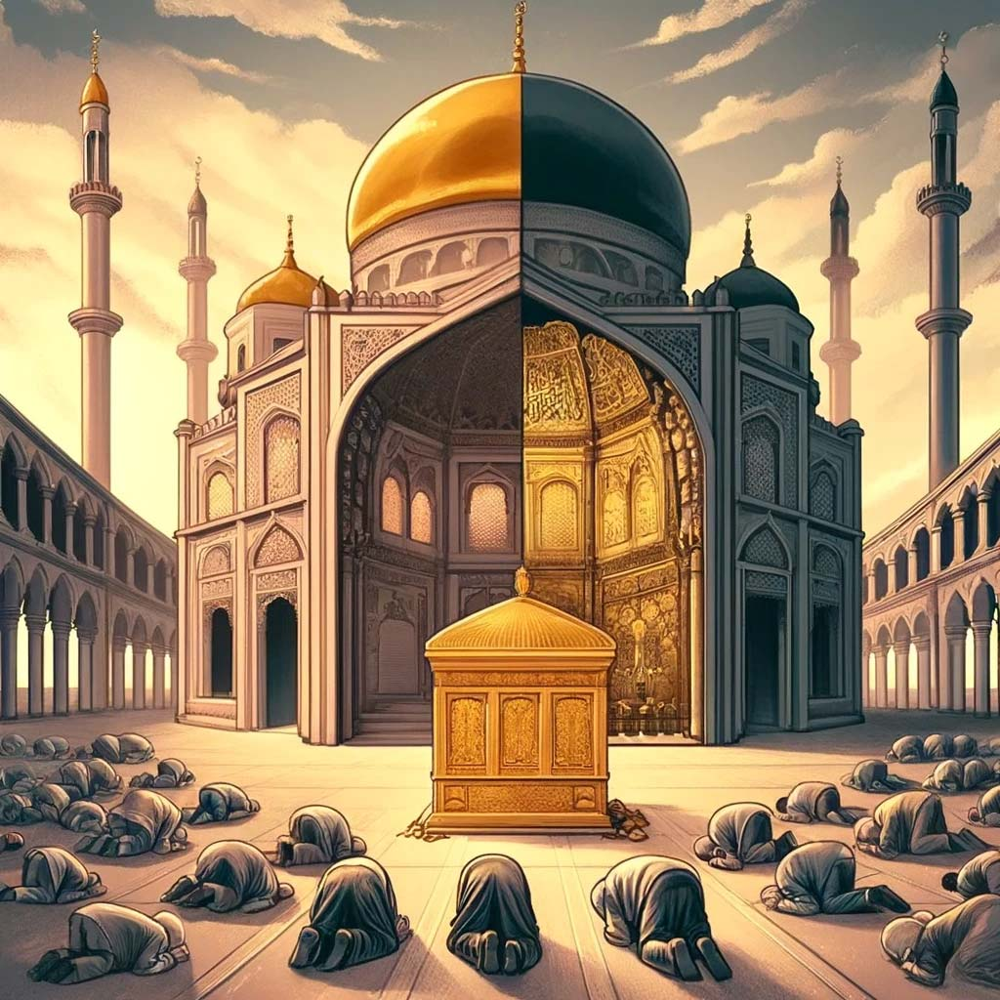

این گناه چیه که همش میگن این کارو بکن ثواب داره، اون کارو نکن گناه داره؟ گناه کبیره و صغیره کدومه؟ خدایی که میگه من از عالم و آدم بی نیازم، چرا نیاز داره ما گناه نکنیم؟ که ناراحت نشه؟

وَمَنْ كَفَرَ فَإِنَّ اللَّهَ غَنِيٌّ عَنِ الْعَالَمِينَ
مقدمه
همونطور که تو فارسی کلمات مختلفی داریم:
پسر عمو، دختر عمو، پسر عمه، دختر عمه، پسر خاله، دختر خاله، پسر دایی، دختر دایی، قوم و خویش
که تو انگلیسی همش یه ترجمه مشترک داره: کازین (cousin)؛
تو قرآن هم (عربی) کلمات مختلفی داریم:
جُناح، جُرم، ذَنب، اِثم، خطا، سیئه، ظلم، جُور، فِسق، عصیان، طغیان، بَغی،..
که تو فارسی (یا سایر زبونا) همش یه ترجمه مشترک داره: گناه (sin).
همونطور که پسر عمو با دختر خاله فرق دارن با اینکه هر دو قوم و خویش محسوب میشن، جُرم و ذَنب و اِثم و غیره هم فرق دارن با اینکه همه گناه محسوب میشن.

تو قرآن 10 کلمه هستن که همه جا یا بعضی جاها گناه ترجمه شدن. به ترتیب بیشترین تکرار (ریشه) :
| # | کلمه | ریشه | تکرار |
|---|---|---|---|
| 1 | ظلم | ظلم | 172 |
| 2 | سیئه | سوء | 163 |
| 3 | بغی | بغی | 96 |
| 4 | جُرم | جرم | 66 |
| 5 | فِسق | فسق | 54 |
| 6 | اِثم | اثم | 48 |
| 7 | ذَنب | ذنب | 39 |
| 8 | طغیان | طغو | 38 |
| 9 | جُناح | جناح | 31 |
| 10 | خطا | خطء | 22 |
خدا میگه اگه اجتناب کنین از گناهای کبیره و فحشاء، مگه لغزشای جزئی، بخشش و مغفرتم زیاده :
الَّذِينَ يَجْتَنِبُونَ كَبَائِرَ الْإِثْمِ وَالْفَوَاحِشَ إِلَّا اللَّمَمَ إِنَّ رَبَّكَ وَاسِعُ الْمَغْفِرَةِ
جای امیدواریه؛ اما چرا قرآن مثل حرامهای کبیره (2:173)، نگفته گناهای کبیره به ترتیب دقیقا چیه؟ که مجبور نباشیم به آیات و احادیث مختلف رجوع کنیم، واسه شناسایی اونا (لینک).
آیا ممکنه لیست گناه ها، مثل لیست حرام ها، واسه همۀ آدما ثابت و یکسان نیست؟ مثلا گناهی که برای من بزرگه (کبیر)، برای شما کوچیک محسوب بشه (صغیر)، یا برعکس؟
أَشَدُّ الذُّنُوبِ مَا اسْتَهَانَ بِهِ صَاحِبُهُ
مگه تقریبا همه نمیگیم قتل بزرگترین گناه کبیرست؟ پس چطور موسی با مُشت یکی رو کُشت، بعدشم فرار کرد، اما خود خدا بعدها شخصا باهاش کلام گفت و ملاقات کرد؟

يَا مُوسَىٰ إِنَّهُ أَنَا اللَّهُ الْعَزِيزُ الْحَكِيمُ
موسی قتل کرد، گناه کبیره نبود؟ یا قتلش عمد نبود (کلاه شرعی)؟ یا چون پیامبر بود مهم نبود (پارتی بازی)؟
وَقَتَلْتَ نَفْسًا فَنَجَّيْنَاكَ مِنَ الْغَمِّ
فرض کنیم موسی قتلش عمد نبود، اما همین موسی مگه یه جا دیگه دنبال یکی راه نیافتاد که اون از عمد یه پسری رو (طبق مشیت خدا) به قتل رسوند؟ اون رو که دیگه نمیشه بگیم قتل غیر عمد؟
لَقِيَا غُلَامًا فَقَتَلَهُ قَالَ أَقَتَلْتَ نَفْسًا زَكِيَّةً
از طرف دیگه، پیامبر یه لحظه (وسط یه جلسه؟) عبوس شد و رو گردوند از یه آدم کور (که ظاهرا بلند بلند پریده بود وسط داد میزد؟). این گناه کبیره بود یا صغیره؟

خدا بخاطر همین گناه(؟)، یه سوره بنام عبوس (عَبَسَ، کنایه به اخم کردن محمد) نازل کرد، که تا قیامت تو قرآن ثبت بمونه.
عَبَسَ وَتَوَلَّىٰ؛ أَنْ جَاءَهُ الْأَعْمَىٰ
آیا واقعا کار محمد انقدر بد بود؟ یا توقع خدا از محمد (بندۀ مقرّب) اونقدر زیاد بود؟ آیا خود ما هم توقعی که از نزدیک ترین هامون داریم، به مراتب بیشتر از سایر آدما نیست؟

حسنات الابرار، سیئات المقربین
مثال تاریخی
سال 2009 جو ویلسون نمایندۀ آمریکا، وسط سخنرانی باراک اوباما، داد زد: 'دروغ میگی'. همین (گناه) شد یکی از جنجالیترین لحظات تاریخ کنگرۀ آمریکا! ویدیو
در حالی که آدمها تو جایگاه و زمان و مکانهای مختلف ممکنه خیلی حرفهای زشتتر از این به هم بزنن! ولی هیچ کدوم چنین بازتابی ایجاد نکنه.
پس کبیر یا صغیر بودن گناه، یه تعریف واحد نداره که واسه همه مشترک باشه. توقع خدا از هر کسی، به قدر وُسع خود اون آدمه.

لَا يُكَلِّفُ اللَّهُ نَفْسًا إِلَّا وُسْعَهَا
از بین 10 کلمه ای که معمولا گناه ترجمه میشن (لینک)، بیشترین تعداد تکرار رو ظلم داره. این کلمات تو قرآن از ریشۀ ظلم هستن:
اظلم، الظالمين، الظالمون، بالظالمين، بظلام، بظلمهم، تظلم، تظلمون، تظلموا، ظلما، ظالم، ظالمون، ظالمين، ظالمة، ظلمات، ظلمتم، ظلمونا، ظلمه، ظلموا، ظلمهم، ظلمنا، ظلمناهم، كظلمات، للظالمين، ليظلمهم، مظلما، مظلوما، مظلمون، والظالمون
اولین آیه ای که یک کلمه از ریشۀ ظلم توش اومده (ظلمات) اینه:
مَثَلُهُمْ كَمَثَلِ الَّذِي اسْتَوْقَدَ نَارًا فَلَمَّا أَضَاءَتْ مَا حَوْلَهُ ذَهَبَ اللَّهُ بِنُورِهِمْ وَتَرَكَهُمْ فِي ظُلُمَاتٍ لَا يُبْصِرُونَ
پیرو آیات قبلش (لینک) این آیه مثال اون آدماست که میگن به خدا و آخرت ایمان داریم، ولی عملا اهل ایمان نیستن. یعنی نه خدا نقشی داره تو زندگی امروزشون، نه خودشون تلاشی میکنن واسه زندگی آخرتشون. نار و نور همریشه هستن، اما حاصلشون متفاوته. نار (آتش) عامل سوختنه، نور (خدا) عامل ساختنه.

اینجا میگه اونا که ظاهرا مومن هستن ولی زندگی ایمانی ندارن، هر کدوم یه راه و روشی واسه خودشون پیش گرفتن (افروختن آتش)، که خدا هیچ نقش و جایگاهی در مسیر زندگیشون نداره.
انگار خدا فقط تو عالم درون اونهاست (باور ذهنی)، نه عالم بیرون اونها (زندگی واقعی). خدایی که فقط تو ذهن من باشه، آیا اون خالق منه یا من خالق اونم؟ خدا خالق ذهن و محل زندگی منه، یا ذهن من خالق خدا و محل زندگی اونه؟

این مومن های ظاهری، طبق این مثال ظالم هستن. ظلم (گناه) میکنن، در حق خودشون و دیگر مومنان. با ترک نور حقیقتِ خداشون، و چسبیدن به باورهای تاریکِ خودشون (جهل، خرافات، تعصب، تقلید، ..).
-
سوالات
-
1. در خلالی که موسی در دل اون کوه مشغول زیارت خدا بود، و قومش در دامنۀ همون کوه برگشتن به عادتهای عبادی اجدادی (زیارت گوساله)، چرا خدا گفت شما ظالم (گناهکار) هستین؟

وَإِذْ وَاعَدْنَا مُوسَىٰ أَرْبَعِينَ لَيْلَةً ثُمَّ اتَّخَذْتُمُ الْعِجْلَ مِنْ بَعْدِهِ وَأَنْتُمْ ظَالِمُونَ
و وقتی وعده کردیم با موسی چهل شب؛ سپس گرفتید گوساله را از بعدش، و شمایید ظالمان (گناهکاران) 2:51 -
2. مگه نمیگیم هر کسی رو تو گور خودش میخوابونن؟ آیا مناسک عبادی ناشی از نادانی (ظلم) که عده ای مومن ظاهری پیرو عادات اجدادی خودشون انجام میدن، میتونه مانع مسیر ایمانی دیگران بشه؟
وَمَنْ أَظْلَمُ مِمَّنْ مَنَعَ مَسَاجِدَ اللَّهِ أَنْ يُذْكَرَ فِيهَا اسْمُهُ وَسَعَىٰ فِي خَرَابِهَا
و کیست ظالم تر (گناهکار تر) از آنکه مانع شد مساجد خدا ذکر شود در آن اسم او، و سعی کرد در خرابش 2:114 -
3. چرا خدا آدما رو از انواع گناهان / تاریکی ها (ظلمات) به سمت یک نور (واحد) هدایت میکنه، بجای هدایت از یک تاریکی (ظلمت) به سمت انواع نور ها؟ و برعکس، وقتی یکی از نور خدای واحد دور میافته، به سمت انواع مکاتب و عقاید و تاریکی ها (ظلمات) سوق پیدا میکنه؟
اللَّهُ وَلِيُّ الَّذِينَ آمَنُوا يُخْرِجُهُمْ مِنَ الظُّلُمَاتِ إِلَى النُّورِ وَالَّذِينَ كَفَرُوا أَوْلِيَاؤُهُمُ الطَّاغُوتُ يُخْرِجُونَهُمْ مِنَ النُّورِ إِلَى الظُّلُمَاتِ
خداست ولیّ ایمان آورندگان، خارجشان میکند از ظلمات سوی نور. و آنانکه کفر ورزیدند، اولیائشان طاغوت. خارجشان میکنند از نور، سوی ظلمات 2:257 -
4. اگه آدم به نور عقل خودش (علم) تکیه کنه، بجای نور هدایت خدا (ایمان)، چه مشکلی میتونه پیش بیاد؟ یک نمونه قرآنی، که یک دانا (حکمران) در میان جمعی نادان (عوام) تکیه به عقل و علم و قدرت خودش به تنهایی زد، در ابتدای این آیه اومده:
... وَاللَّهُ لَا يَهْدِي الْقَوْمَ الظَّالِمِينَ
آیا نگاه نکردی به آنکه محاجّه کرد با ابراهیم در ربّش - که داده بودش خدا مُلک - وقتی گفت ابراهیم: ربّ من کسیست که زنده میکند و میمیراند. گفت: من زنده میکنم و میمیرانم. گفت ابراهیم: پس همانا خدا میاورد خورشید را از مشرق، پس بیار آنرا از مغرب. پس مبهوت شد آنکه کفر ورزید، و خدا هدایت نمیکند قوم ظالمان را 2:258